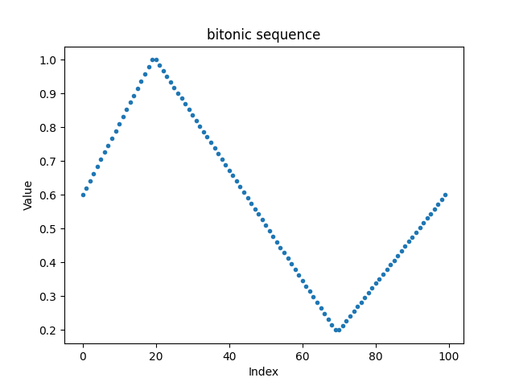
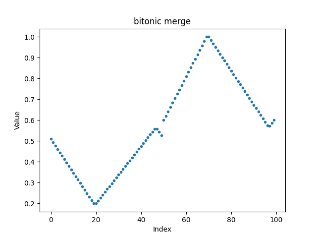
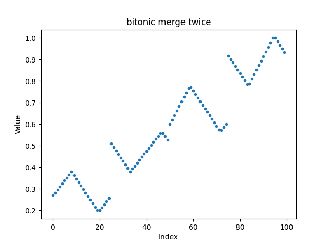

10.3. Branch-free sorting#
Most of the standard sorting algorithms require conditional swaps, for example bubble sort:
void bubbleSort(int *a, size_t n) {
for (size_t i=0; i<n-1; i++)
for (size_t j=0; j<n-i-1; j++)
if (a[j]>a[j+1])
std::swap(a[j],a[j+1]);
}
An algorithm with better complexity is quick sort, but it needs branches as well.
By using min/max functions, one can avoid the if statement:
void bubbleSort(int *a, int n) {
for (int i=0; i<n-1; i++)
for (int j=0; j<n-i-1; j++) {
int mi = std::min(a[j], a[j+1]);
int ma = std::max(a[j], a[j+1]);
a[j] = mi;
a[j+1] = ma;
}
}
The advantage of the branch-free version is that it can be applied to SIMD types as well,
and we can sort severals lists simultaneously:
void bubbleSort(SIMD<int,8> *a, int n) {
for (int i=0; i<n-1; i++)
for (int j=0; j<n-i-1; j++) {
SIMD<int,8> mi = min(a[j], a[j+1]);
SIMD<int,9> ma = max(a[j], a[j+1]);
a[j] = mi;
a[j+1] = ma;
}
}
Of course, bubble sort with its \(O(n^2)\) complexity is not the optimal choice.
10.3.1. Sorting networks#
To sort a small number of vectors we can use a few explicit sorting steps:
template <typename T>
void Sort2(T& a, T& b) {
T mi = min(a,b);
T ma = max(a,b);
a = mi;
b = ma;
}
// sorting 3 values:
int v[3] = {4,2,3};
Sort2 (v[0],v[1]);
Sort2 (v[1],v[2]);
Sprt2 (v[0],v[1]);
Similar, sorting 4 values can be done with 5 calls of the Sort2 function.
As long as we have the min and max functions, we can use the same sorting function for SIMD types.
In contrast, algorithms which need branching (like quicksort) cannot be directly applied to SIMDs.
Such kind of sorters are called Sorting network
10.3.2. Bitonic sorting networks#
A popular sorting network having better complexity is bitonic sorting.
A sequence \([x_0,\ldots x_{n-1}]\) is called bitonic if there exist \(0 \leq a < b \leq n\):
indices are taken module \(n\).
{kind=link}

A bitonic merge-up \(\tilde x\) of the sequence is defined as
For a bitonic merge-down the min and max are swapped.
The bitonic merge-up of the sequence above gives:
{kind=link}

We observe that
all elements in the first half are smaller than all elements in the second half
the sequences restricted to the first half and the second half are bitonic, again
We repeat the bitonic merge for the lower and the upper half:
{kind=link}

By recusive repetition we obtain a sorted sequence.
To obtain the the first bitonic sequence one can sort-up for the first half of the sequence, and then sort-down for the second half.
The complete code is here:
template <bool UP, template T>
void BitonicMerge (VectorView<T> a)
{
size_t n = a.size()
if (n <= 1) return;
size_t n2 = n/2;
for (size_t i = 0; i < n/2; i++)
{
auto mi = min(a[i],a[i+n2]);
auto ma = max(a[i],a[i+n2]);
if constexpr (UP)
{
a[i] = mi;
a[i+n2] = ma;
}
else
{
a[i] = ma;
a[i+n2] = mi;
}
}
BitonicMerge<UP> (a.range(0, n2);
BitonicMerge<UP> (a.range(n2,n);
}
template <bool UP, template T>
void BitonicSort (VectorView<T> a)
{
size_t n = a.size();
if (n <= 1) return;
size_t n2 = n/2;
BitonicSort<UP> (a.range(0,n2);
BitonicSort<!UP> (a.range(n2,n);
BitonicMerge<UP> (a);
}
The bitonic search algorithm has complexity \(O(n (\log n)^2)\). There are sorting networks of complexity \(O(n \log n)\), but this seems to be more of theoretical interest.
10.3.2.1. Exercise#
Implemnt and test